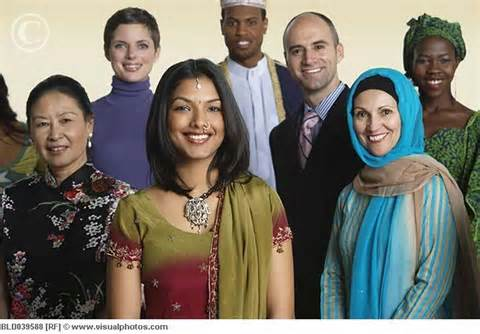
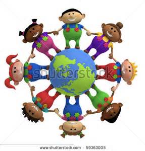

Facts about Stereotypes
- Stereotypes exist in all groups, including all ethnic groups
- Stereotypes may include labeling or making generalized statements implying that all members of a group are a certain way.
- Stereotypes can lead to major problems in society
Combating Stereotypes
- Education and raising awareness are important steps in combating stereotypes
- Also, it is important to encourage open interaction with all groups, not only ethnic groups but people with disabilities as well
- Lastly, people should not be afraid to ask questions and conduct research on other groups